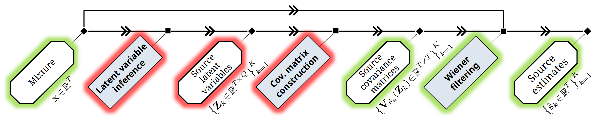

Time-Domain Audio Source Separation Based on Gaussian Processes with Deep Kernel Learning
A. A. Nugraha, D. Di Carlo, Y. Bando, M. Fontaine, and K. Yoshii, "Time-Domain Audio Source Separation Based on Gaussian Processes with Deep Kernel Learning," in Proc. IEEE Workshop Appl. Signal Process. Audio Acoust., New Paltz, NY, USA, 2023, pp. 1-5.
Abstract
This paper revisits single-channel audio source separation based on a probabilistic generative model of a mixture signal defined in the continuous time domain. We assume that each source signal follows a non-stationary Gaussian process (GP), i.e., any finite set of sampled points follows a zero-mean multivariate Gaussian distribution whose covariance matrix is governed by a kernel function over time-varying latent variables. The mixture signal composed of such source signals thus follows a GP whose covariance matrix is given by the sum of the source covariance matrices. To estimate the latent variables from the mixture signal, we use a deep neural network with an encoder-separator-decoder architecture (e.g., Conv-TasNet) that separates the latent variables in a pseudo-time-frequency space. The key feature of our method is to feed the latent variables into the kernel function for estimating the source covariance matrices, instead of using the decoder for directly estimating the time-domain source signals. This enables the decomposition of a mixture signal into the source signals with a classical yet powerful Wiener filter that considers the full covariance structure over all samples. The kernel function and the network are trained jointly in the maximum likelihood framework. Comparative experiments using two-speech mixtures under clean, noisy, and noisy-reverberant conditions from the WSJ0-2mix, WHAM!, and WHAMR! benchmark datasets demonstrated that the proposed method performed well and outperformed the baseline method under noisy and noisy-reverberant conditions.

Reference
A. A. Nugraha, D. Di Carlo, Y. Bando, M. Fontaine, and K. Yoshii, “Time-Domain Audio Source Separation Based on Gaussian Processes with Deep Kernel Learning,” in Proc. IEEE Workshop Appl. Signal Process. Audio Acoust., New Paltz, NY, USA, 2023, pp. 1-5, doi: 10.1109/WASPAA58266.2023.10248168.
Audio Samples
Tasks: single-channel separations of two speech signals on popular benchmark datasets
clean condition with WSJ0-2mix dataset (Hershey+ 2016),
noisy condition with WHAM! dataset (Wichern+ 2019), and
noisy-reverberant condition with WHAMR! dataset (Maciejewski+ 2020).
“OLA” denotes the overlap-add operation required for separation with overlapping segments.